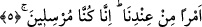
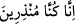
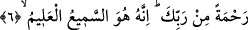

şefkatli, Cebrâil’den de (a.s.) daha heybetli ve kudretli bir melek yoktur. Haberde
gelmiştir ki bir gün bu iki melek münâzara ettiler ve Cebrâil (a.s.) şöyle dedi: “Halkın
bütün hürmetsizliği ve cefâsına rağmen izzet sahibi Allah’ın onlar için cenneti yaratmış
olmasına şaşıyorum!” Mikâil (a.s) ise şöyle dedi: “Ben de kullarına olan bu kadar
ihsân, şefkat ve merhametine rağmen Allah’ın cehennemi yaratmasına şaşıyorum!”
Hazret-i İzzet ve Cenâb-ı Ceberrût’tan nidâ geldi: “İkiniz arasında benim hakkımda
güzel zanda bulunanı daha çok seviyorum!” Yani Mikâil’i (a.s) kasd ediyor, çünkü o,
rahmeti gazaba tercih ediyor.
Allah Teâlâ hadîs-i kudsî’de: “Elbette benim rahmetim gazabımı geçmiştir”[203]
buyurmaktadır. Bu geceden gelecek seneye kadar meydana gelecek olan hayır, şer, dert,
nîmet, musîbet, lutuf, zafer hezimet, bolluk, kıtlık gibi bütün bu hikmetli işler nasıl bu
gece karara bağlanıyorsa, aynı şekilde mânâ âlemindeki hicâb ve cezbeler, vasl ve
fasllar, muvâfakat ve muhâlefetler, tevfîk ve hizlânlar, kabz ve bastlar, setr ve tecellîler
evet bütün bu ve benzer haller hep bu gece karara bağlanır. Bazı kullara küfür ve
Allah’tan uzaklık, diğer bazı kullara da destek ve yakınlık hüküm ve kazâsı indirilir.
5. Katımızdan bir emirle… Çünkü biz, peygamberler göndermekteyiz.
Bu ifâde ihtisâs tarzıyla nasb edilmiştir. Yani ben bu emirle hikmetimizin gereği
olarak tarafımızdan meydana gelen bir emri murâd ediyorum, demektir. Bu ifâde, o gece
karara bağlanan işlerin zâtî azametleri yanında izâfî azametlerini beyân etmektedir.
“Çünkü biz, peygamberler göndermekteyiz” buradaki “
” ifâdesi yukarıdaki
“
” ifâdesinden bedel-i küldür.
6. Rabbinin bir rahmeti olarak. O işitendir, bilendir.
Bu ifâde, mürsilîn şeklinde ifâde edilen irsâl/gönderme fiilinin mef’ûlü lehidir. Yani
biz Kur’ân’ı indirdik. Çünkü rahmetimizi kullara akıtıp ulaştırmak için onlara
peygamberler ve kitaplar göndermek bizim âdetimizdir. Buna göre rahmet sözü,
peygamber göndermenin sonradan gerçekleşen gayesidir. Bundan murâd, rahmetin
kullara ulaşabilmesidir ya da öncelikle peygamberlerin gönderilmesi, rahmetimizin
gereğidir. Buna göre buradaki rahmetten murâd herşeyden önce rahmetin başlangıcı ve
kaynağı olur ki, bu kaynak peygamber gönderme işini yapan Allah’tır. Burada yapılan bu
işlerin bir Rabb olma ahkâmı ve muktezâsı olduğunu bildirmek için burada zamir